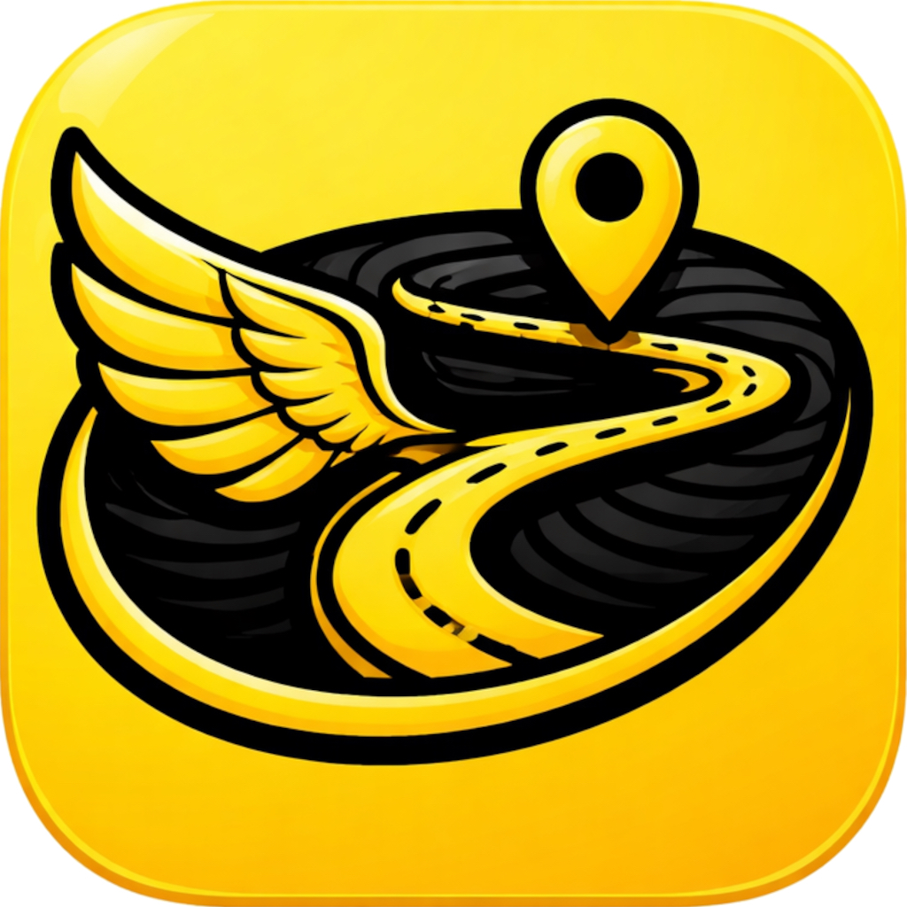

GPX file not loading?
Check that the file ends in .gpx and includes a route with at least two points. You can choose it from Files when you tap Import GPX.

FLYTRAILWE’RE HERE TO HELP
Tell us what happened and we’ll do our best to get you back to the good part: sharing your run.
EMAIL FLYTRAIL SUPPORTexcorbe@gmail.com↗Check that the file ends in .gpx and includes a route with at least two points. You can choose it from Files when you tap Import GPX.
Large routes need more time to render. Keep FlyTrail open while it works, and try again on a stable connection so map imagery can load.
Purchases are handled by Apple. You can restore a subscription from the paywall. For billing or refund requests, visit Apple Support.
When contacting support, include your iPhone model and iOS version. Please don’t email a GPX file unless you are comfortable sharing its location history.